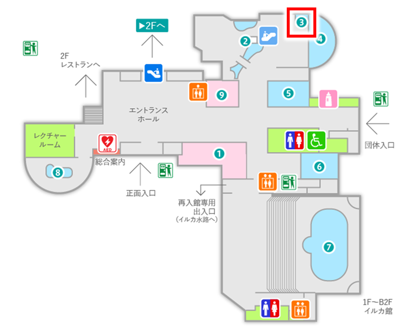

成長すると1.8mから2mほどになります。名前はウナギですが、分類学上ではウナギよりナマズに近い魚です。
体内に約6000個の発電細胞を持ち、最大650Vの電圧で放電します。視力が弱いため、10V以下の微弱な電気で周囲を探ります。
電気を使って獲物をしびれさせるなんて、まるで超能力者ですね。
（飼育員 ゆきひろ）
南アメリカのアマゾン川、オリノコ川流域
Q1：デンキウナギは何を使って獲物を捕まえるでしょう？
Q2：デンキウナギの放電電圧は最大でどのくらいでしょう？
デンキウナギはえら呼吸に加え、空気呼吸も行うことができます。
南米のアマゾン川やオリノコ川流域に生息するデンキウナギを展示しています。 デンキウナギは濁った水中でくらすため、目は退化して物を見ることができません。イベント「デンキウナギの放電を見よう」を通して、生きた餌（ドジョウ）をデンキウナギが放電してとらえる様子を紹介します。平日は１日２回、土・日・祝は１日３回行っています。
